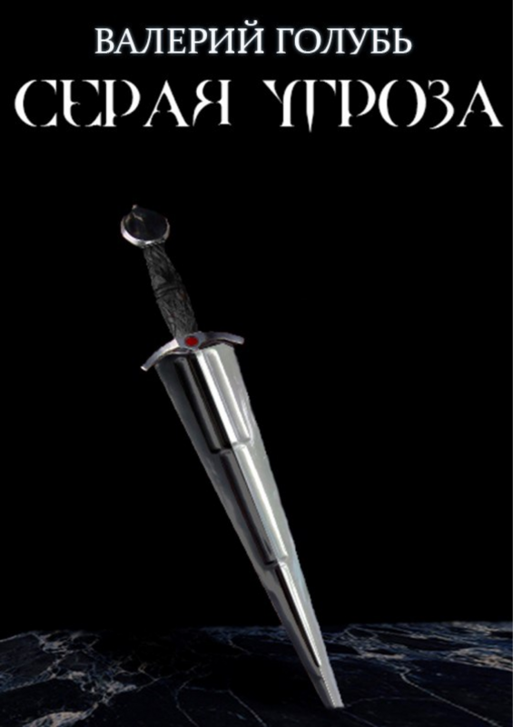

01 — 06 Авторская библиотекаФэнтези / Мистика / Другие мирыИстории, которые остаются
На книжной полке
Выберите свой мир
Большое путешествие или отдельная история — решать вам.
01 / 06

Цикл «Арена» · Книга 1
Серая угроза
Начало цикла «Арена». История о монстрах, ангелах и демонах.
О книге
Небольшой город Эрекниум вот уже несколько десятков лет терроризируют Серые — монстры, анатомией отдаленно похожие на человека. Главный герой, член Ордена — организации, владеющей технологией боя в сознании, Одиннадцатый, на своей шкуре узнает, что Серые эволюционировали и такими темпами смогут уничтожить человечество.
Боевое фэнтези · Параллельные миры · Ангелы и демоны
История переносит нас из средневекового времени в довольно привычный для нас двадцать первый век.
О книге
Продолжение книги «Серая угроза». Главный герой возвращается в свой родной мир, чтобы закончить начатое. Уничтожить организацию, создающую монстров из людей.
История, которая ломает четвертую стену как внутри книги, так и перед читателем — аккуратно и уместно.
О книге
Третья часть истории Райса, являясь прямым продолжением «Серой угрозы» и «Перехода», рассказывает о новом путешествии и глобальной проблеме, нависшей над параллельным миром. Казалось, кто может быть сильнее пары Двуликих, но Второй мир приберёг особые устройства, отключающие ментальные способности людей.
Боевое фэнтези · Средневековый мир · Ангелы и демоны
История о том, как девушка и её отец посетили Ад, Рай, Чистилище — и на этом не остановились.
О книге
Финал приключений Райса, произошедший через двадцать лет после окончания событий прошлой части. Устройство, потерянное в Центральном мире, было активировано, из-за чего реальность на Земле заменилась Ареной. Чтобы вернуться к обычной и размеренной жизни, нужно всего лишь отыскать устройство и отключить его. Что может быть проще?
История о том, что каждый может стать богом, но не каждому это необходимо.
О книге
Спокойная и размеренная жизнь парня в один миг переворачивается с ног на голову. Он начинает осознавать, что его воспоминания никогда не были реальностью. Майку предстоит разобраться в себе и сохранить свой рассудок в хаотичном безумии.
Мистика · Остросюжетная фантастика · Психологическая драма
Когда добро становится грехом, а спасение — катастрофой, где провести грань?
О книге
Восемь персонажей, чьи судьбы переплетены, оказываются в эпицентре войны, где каждый шаг — жертва. Они — Звери, чьи тела и разумы терзает борьба с собственной природой. Можно ли быть человеком, если в тебе живёт грех? И что произойдёт, когда тьма внутри станет сильнее, чем стремление к свету?
Валерий Голубь пишет фэнтези и мистические истории. Его первая книга, «Серая угроза», начатая ещё в пятнадцать лет, стала отправной точкой цикла «Арена».
От приключений Райса в параллельных мирах до загадок памяти во «Фрактале» — в каждой истории привычное оказывается сложнее, чем кажется на первый взгляд.